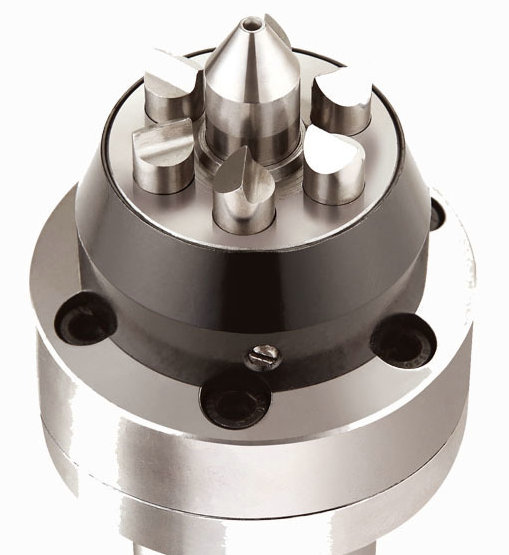
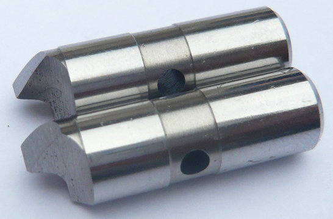
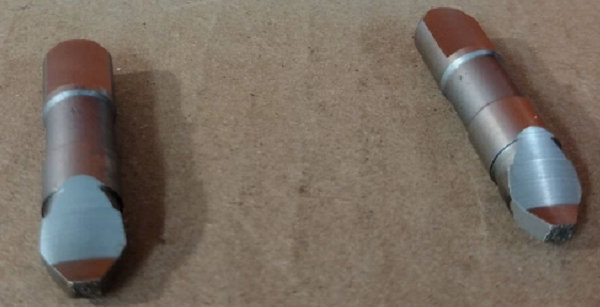
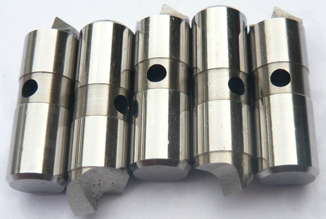

YDTech® Präzisions-Hartmetall-Mitnehmerbolzen für Stirnseitenmitnehmer – Ihr starker Partner
Hartmetall (Wolframcarbid) übertrifft herkömmliche Werkzeugstähle um ein Vielfaches an Härte und Abriebbeständigkeit. Unsere Hartmetall-Mitnehmerbolzen werden aus feinstkörnigen Carbid-Sorten mit einer Härte von bis zu 92 HRA gefertigt.


Das bedeutet für unsere Kunden: Deutlich längere Standzeiten im Vergleich zu Standard-Mitnehmerbolzen aus Stahl, Geringere Stillstandszeiten für Nachjustage oder Austausch, Zuverlässiger Form- und Kraftschluss auch unter maximaler Belastung.
Jeder Stirnseitenmitnehmer ist anders – daher fertigen wir Ihre Antriebsstifte exakt nach Zeichnung. Ob für bekannte Marken oder für kundenspezielle Sondermaschinen: Wir realisieren Varianten mit verschiedenen Schaftdurchmessern, Kopfgeometrien, Längen und Toleranzklassen. Besonders gefragt sind unsere Mitnehmerbolzen mit Hartmetallspitze, die eine optimierte Druckverteilung auf das Werkstück ermöglichen.


Als echter Hersteller – kontrollieren wir jeden Schritt: von der Rohmaterialauswahl über das Sintern des Hartmetalls bis hin zum Feinrundschleifen und der Hartfeinbearbeitung. Alle Hartmetall-Mitnehmerbolzen werden einer 100%-Messung unterzogen.
Viele internationale Maschinenbauer vertrauen bereits auf unsere Hartmetall-Antriebsstifte. Durch unsere schlanken Produktionsstrukturen bieten wir attraktive Preise ohne Kompromisse bei der Präzision. Dabei sind wir flexibel bei Verpackung, Kennzeichnung und Logistik – natürlich diskret als Eigenmarke oder mit Ihrem Branding.
Testen Sie unsere Leistungsfähigkeit. Senden Sie uns Ihre Zeichnung oder eine Musteranfrage – wir kalkulieren innerhalb von 48 Stunden. Ob Hartmetall-Mitnehmerbolzen, Mitnahmebolzen oder Antriebsstifte für Face Driver: Wir sind Ihr kompetenter Partner für langlebige, präzisionsgefertigte Antriebselemente Made in China – engineered for global standards.
- Startseite
- Produkte
- Kontakt
- Exzentrische Mitnehmerbolzen
- halb versetzte Antriebsstifte
- Zentrische Mitnahmebolzen
- Standard-Mitnehmermesser
- abgefachte Mitnahmebolzen
- Rechtslauf Antriebszapfen
- Linkslauf-Mitnehmerstifte
- Mitnehmerbolzen mit voller Mitnahmebreite
- langlebige Mitnehmerbolzen
- Mitnehmerbolzen mit Meißelkante
- schwimmende Mitnehmer
- Kraftbetätigte Mitnehmerbolzen
- hydraulische Anschlussstifte
- mechanische Anschlussstifte
- bewegliche Mitnehmerbolzen
- feste Anschlussstifte
- Hartmetall Mitnahmebolzen
- Werkzeugstahl S7 Bolzen
- Wechselbare Mitnehmerbolzen
- Mitnehmerstift